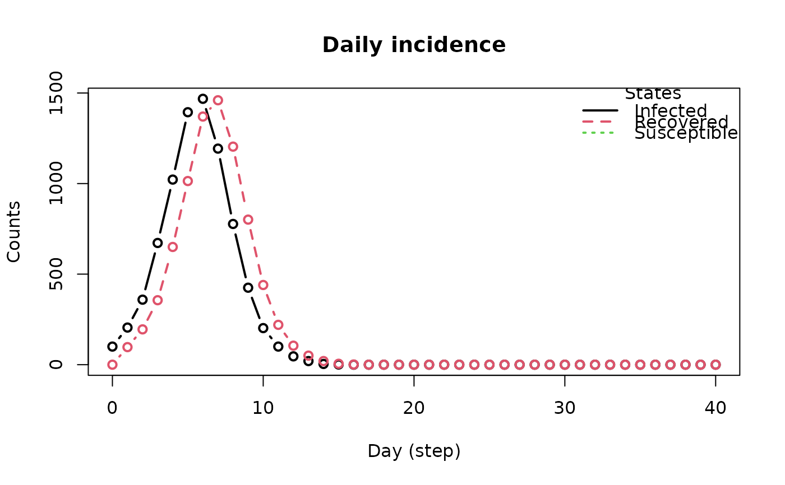
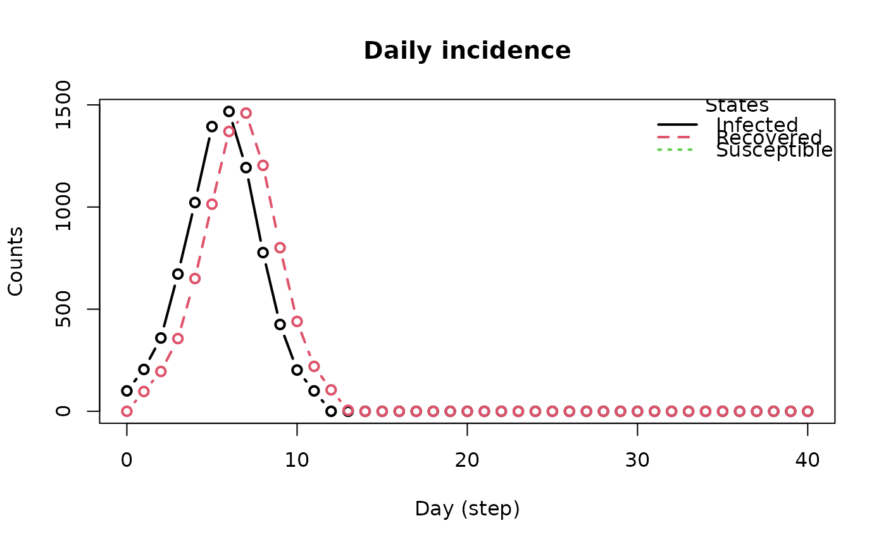

Global actions are functions that are executed at each time step of the simulation. They are useful for implementing interventions, such as vaccination, isolation, and social distancing by means of tools.
Usage
globalevent_tool(tool, prob, name = get_name_tool(tool), day = -99)
globalevent_tool_logit(
tool,
vars,
coefs,
name = get_name_tool(tool),
day = -99
)
globalevent_set_params(
param,
value,
name = paste0("Set ", param, " to ", value),
day = -99
)
globalevent_fun(fun, name = deparse(substitute(fun)), day = -99)
add_globalevent(model, action)Arguments
- tool
An object of class tool.
- prob
Numeric scalar. A probability between 0 and 1.
- name
Character scalar. The name of the action.
- day
Integer. The day (step) at which the action is executed (see details).
- vars
Integer vector. The position of the variables in the model.
- coefs
Numeric vector. The coefficients of the logistic regression.
- param
Character scalar. The name of the parameter to be set.
- value
Numeric scalar. The value of the parameter.
- fun
Function. The function to be executed.
- model
An object of class epiworld_model.
- action
A global action.
Value
The
globalevent_set_paramsfunction returns an object of class epiworld_globalevent_set_param and epiworld_globalevent.globalevent_toolreturns an object of class epiworld_globalevent_tool and epiworld_globalevent.globalevent_tool_logitreturns an object of class epiworld_globalevent_tool_logit and epiworld_globalevent.
The function
add_globaleventreturns the model with the added action.
Details
The function globalevent_tool_logit allows to specify a logistic
regression model for the probability of using a tool. The model is specified
by the vector of coefficients coefs and the vector of variables vars.
vars is an integer vector indicating the position of the variables in the
model.
The function globalevent_set_param allows to set a parameter of
the model. The parameter is specified by its name param and the value by
value.
The function globalevent_fun allows to specify a function to be
executed at a given day. The function object must receive an object of class
epiworld_model as only argument.
The function add_globalevent adds a global action to a model.
The model checks for actions to be executed at each time step. If the added
action matches the current time step, the action is executed. When day is
negative, the action is executed at each time step. When day is positive,
the action is executed at the specified time step.
Examples
# Simple model
model_sirconn <- ModelSIRCONN(
name = "COVID-19",
n = 10000,
prevalence = 0.01,
contact_rate = 5,
transmission_rate = 0.4,
recovery_rate = 0.95
)
# Creating a tool
epitool <- tool(
name = "Vaccine",
prevalence = 0,
as_proportion = FALSE,
susceptibility_reduction = .9,
transmission_reduction = .5,
recovery_enhancer = .5,
death_reduction = .9
)
# Adding a global action
vaccine_day_20 <- globalevent_tool(epitool, .2, day = 20)
add_globalevent(model_sirconn, vaccine_day_20)
# Running and printing
run(model_sirconn, ndays = 40, seed = 1912)
#> _________________________________________________________________________
#> |Running the model...
#> |||||||||||||||||||||||||||||||||||||||||||||||||||||||||||||||||||||||| done.
#> | done.
model_sirconn
#> ________________________________________________________________________________
#> Susceptible-Infected-Removed (SIR) (connected)
#> It features 10000 agents, 1 virus(es), and 1 tool(s).
#> The model has 3 states.
#> The final distribution is: 2056 Susceptible, 0 Infected, and 7944 Recovered.
plot_incidence(model_sirconn)

# Example 2: Changing the contact rate -------------------------------------
model_sirconn2 <- ModelSIRCONN(
name = "COVID-19",
n = 10000,
prevalence = 0.01,
contact_rate = 5,
transmission_rate = 0.4,
recovery_rate = 0.95
)
closure_day_10 <- globalevent_set_params("Contact rate", 0, day = 10)
add_globalevent(model_sirconn2, closure_day_10)
# Running and printing
run(model_sirconn2, ndays = 40, seed = 1912)
#> _________________________________________________________________________
#> |Running the model...
#> |||||||||||||||||||||||||||||||||||||||||||||||||||||||||||||||||||||||| done.
#> | done.
model_sirconn2
#> ________________________________________________________________________________
#> Susceptible-Infected-Removed (SIR) (connected)
#> It features 10000 agents, 1 virus(es), and 0 tool(s).
#> The model has 3 states.
#> The final distribution is: 2115 Susceptible, 0 Infected, and 7885 Recovered.
plot_incidence(model_sirconn2)

# Example using `globalevent_fun` to record the state of the
# agents at each time step.
# We start by creating an SIR connected model
model <- ModelSIRCONN(
name = "SIR with Global Saver",
n = 1000,
prevalence = 0.01,
contact_rate = 5,
transmission_rate = 0.4,
recovery_rate = 0.3
)
# We create the object where the history of the agents will be stored
agents_history <- NULL
# This function prints the total number of agents in each state
# and stores the history of the agents in the object `agents_history`
hist_saver <- function(m) {
message("Today's totals are: ", paste(get_today_total(m), collapse = ", "))
# We use the `<<-` operator to assign the value to the global variable
# `agents_history` (see ?"<<-")
agents_history <<- cbind(
agents_history,
get_agents_states(m)
)
}